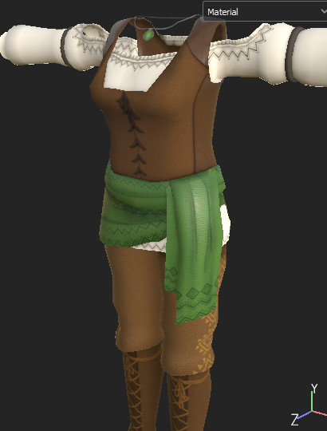
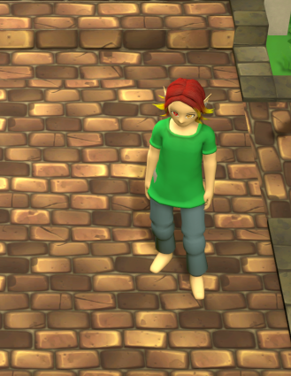

October 1, 2023 - Switch to Unreal Engine 5
This time there is not so much new to report.
As mentioned last time, I tried out the Unreal Engine 5 (UE5) (due to the Unity disaster 2 weeks ago). And what can I say? I'm going to stick with UE5. There are a few reasons for that, and they don't just have to do with Unity.
In short: for my personal future and especially for Magical Harvest I see much more advantages in UE5 than in Unity.
The biggest advantages lie in the graphical aspect. The game looks a lot better with much less effort than in Unity. It's also a very good opportunity to make the code base more stable.
Porting will take a few months. In the time I'll provide you with updates and pictures as best I can!


At the end of October we will be at the "Sweden Game Conference". There you can play Magical Harvest ( the last Unity version) and get the first glimpses of the Unreal Engine 5 version.

At the same time we will pitch there for the first time in front of publishers. Let's see what the results will be. Of course the event has to be prepared from our side and that takes time :(.
Oh and I have the new trailer ready (except for voiceover), which at the same time is already outdated again because of the switch to UE... Hurray or something.
Since there is nothing else to report, here are a few pictures in UE5. Next time I'll write a bit more about the UE5 implementation.
Best regards,
Isa
September 15, 2023 - UNITY!!!
What a week! Unity (the game engine I use for Magical Harvest) has introduced a new payment model, which has caused quite a bit of unrest among users of the engine. A large number of indie developers use this engine.
What's the issue?
Unity's initial post with the new features stated a payment model where developers have to pay a fee to Unity for every install of their games over a certain amount and install count. So if you install and uninstall the game 100x, 100x that fee ($0.20 per install) is charged from the developer (they have since backed down from that and say each install on a new device costs). Now consider how many pirated games there are that don't even make money for an install.
I'm not too worried about the fees themselves with Magical Harvest. The threshold is set really high (with a monthly subscription account, that's $1m in revenue AND 1m installs). But the trust in Unity is gone and people don't want to continue supporting this company. Many negative things (technical things, promises) have been overlooked so far, but this has now taken the cake. Whether this would be legal in Europe is another matter altogether...?
How does this effect Magical Harvest?
I have to elaborate a bit more on this. Currently I am in a coaching program to establish a game company, to prepare myself for pitching to publishers and to find a publisher to pay team members I would like to have for support.
This of course leaves me with a decision to stay with Unity, since I'm already very far along with it and can present presentable gameplay - or to take longer and switch to Unreal Engine 5. Switching would mean it would set me back a few months. You don't just switch engines and be 100% efficient with it like before. It's a new learning process. Of course, it's easier to switch than to start from 0.
So Unity or Unreal Engine 5 (UE5)?
Many game companies (even smaller ones like me) are just switching to a different engine with their Unity projects, some of which are already 2 years old. I'm still undecided (because of the publisher thing), but have started looking into UE5. I want to give it some time to see if it's really worth it for me personally or not. My personal future also depends on it, because UE5 offers quite some advantages - also on the job market.
So it remains exciting in this area and I will keep you informed about my decisions.
But what has happened in the last 2 weeks?
I could not do everything planned, because somehow a lot of smaller things came in between or demanded more time:
- Flowers: 23/40 flowers are finished in their first phase. Their color variants and icons are still missing.
Because of the color variants and the number of flowers I changed the whole system of how color variants are handled in the game. This took the longest time. But now color variants can be inserted for several Items without any problems. Also for e.g. crops (if there is a need - keyword: golden apple or something like that).
- New rocks: there are new rocks! They are now used consistently everywhere in the game!
- New mine: because of the new rocks the mine has got a new shape, too.

- Sequence from developing field plants to the next magic level

- A trailer sequence for the change of the wasteland to the magic forest for the trailer
Planned for the next two weeks:
- Working on a trailer
- Working on a "showcase" demo for the "Sweden Game Conference
- Working on a pitch for the "Sweden Game Conference
- Flowers: adding color variations for spring and summer.
And I'll keep looking at the Unreal Engine on the side. Let's see if it convinces me.
Best regards,
Isa
September 1, 2023 - NPC-Mood and Herbs
Hey everybody!
One thing first: do you know that we have a Discord server? Join and share your expectations and wishes and be part of a community!
Discord
Some news! The good: we have a really good story writer with a focus on romance! The bad: not until we have funding, because of course I want to be able to pay this person.
I'm also starting to get serious about this now. Unfortunately, a lot of time is spent on things like taxes and setting up a company - before the publisher/investor search begins. But well...
In spite of everything, the work in Magical Harvest does not stop. In the second half of August some smaller things have been added or changed:
Dialog system
The dialog system is still being expanded. The NPCs now have a "mood bar". Depending on the course of your conversations, they will be happier or in a bad mood. Some conversation options or their outcome will depend on your mood (for example: you won't be able to propose to an NPC who is in a bad mood).


Herbs
15 different herbs (3 x 5 pet levels) are now in the game, as well as animal food.

Storage boxes
Like the inventory, storage crates now have multiple sections. This means the smallest box has 50 item slots, and the largest currently has 150.

More small deco assets

Also, the rough concepts for the 40 different flowers have been sketched ... why do we have 5 different Tier stages of each type again? ... (2 flower types per season * 5 Tier levels = 40 different flowers)
Outlook
And try to do more towards social media somehow. If anyone has ideas... go for it =D
Thanks for stopping by and see you next time!
Best regards,
Isa
August 15, 2023 - Crops, Dialogues, Inventory
Hey everybody!
Based on a Reddit post in r/cozygames, I made some design changes that I think are very positive: the dialog system with the NPCs and the inventory space.
Dialog system
Before: typical dialog system like in most farming games: you talk to the NPC 1x a day for the friend points bonus and can give gifts.
Now: Dialog system like in "The Sims": several dialog options with different results. But: not all of them increase friendship points (but you can't lose any, but the NPC can get mad at you for the day if you are not nice). Gifts can still be brought daily.

Inventory space
Originally, a maximum inventory of 60 slots was planned. However, inventory management is generally quite annoying and especially in Magical Harvest with the 5 different tier levels, the items in the inventory can pile up quite a lot.
Now a maximum of 300 items can be carried around - in bags with 50 item slots each.
The items can be moved back and forth between the bags and thus be separated.


Storage boxes
Not yet implemented, but also planned, will be the size of the storage boxes. Like the inventory,
different tabs will be implemented there to manage items even better.
Originally, a space of 60 items was planned here as well... But it is clearly too little, if not the entire farm is going to be crowded with boxes.
Farm plants
My focus in the first half of August was on the cultivable farm plants. Apart from the herbs, flowers and trees, ALL crops are now implemented. Both the assets and the icons. This was quite a bit of work and some still need some sprucing up, but they are there for now!
15 base crops, each with 5 tiers, makes 75 different base field crops that can be discovered over the duration of the game (for the MVP status of the game).
Leaf Sheep Slug
One of the creatures that can be caught. And no, this is NOT a magical creature. The Leaf Sheep Slug really exists and lives in the ocean (the green variant)! Crazy, right?! And it is super cute! The 3D model is now finished!

More Deco
In between I create decoration-assets every now and then. This time a few new paths. And of course you can color them and create interesting combinations!

Outlook
* Dialog system
Still the dialog system of the NPCs. It works, but it needs to be better represented in the game engine for future use as a developer to get a better overview of the options.
What you don't see: behind the speech options is a system of conditions when the NPC should say what or which options should be available when.
* Herbs
For the 2nd part of the month the remaining herb assets are planned. Herbs will not be available in the variety as crops and they will also be cultivable in multiple seasons.
* Animal fooder
This also wants to be able to be planted, harvested and used.
* Storage boxes
Storage boxes should also get multiple slots for inventory storage.
So, for half a month this has become quite long. Thanks for reading and looking in! See you in September! Time really flies...!
Best regards,
Isa
August 1, 2023 - Visuals and more!
Hey everybody!
Currently, a lot is going on regarding the visual aspects of the game.
Summarized:
- Concept art for Azriel (elf bachelor) and Kyle (human bachelor, name will change)

- Added a captivating, magical creature - a furr-ball with ears, awaiting a name worthy of its cuteness!


- Added the in-game transition from badlands to the magical forest and the assets for it


- Added season transitions (spring, summer, autumn and winter) and their assets (further color-adjustments will follow)


- Added secondary characteristics to the farm animals, e.g. intelligence, size. They can be increased through breeding and will be useful for animal-minigames or contests.

- I'm so crazy and started creating all the 3D models of the missing crops - that's the spring crops T4 and T5 and all the summer, fall and winter crops. I'm halfway done with them. Herbs, trees/bushes and flowers will follow....
- Revision of the Steampage & webpage (I still need to create a new trailer and screenshots as soon as the visuals are better)
Outlook for the next two weeks
- All other crops on the farm, perhaps also the herbs. On a day I create about 2 plant types. A plant type consists of 5 levels (2 non-magical and 3 magical) and these consist of about 4-6 growth levels each. That means each crop has 20-30 assets. 4 plants per season (more can follow later) are 80-120 assets per season and 320-480 for the whole year. OOF!
- The icons for these and add everything to the game
- Smaller assets or improvements
Best regards,
Isa
July 10, 2023 - Back to business!
Hey everybody!
finally, some news again!
First: do you prefer more detailed news or just a summary like this one?
Answer us in Discord !
Now... as previously announced, June was a bit more relaxed regarding the development of Magical Harvest due to appointments, vacations and our wedding.
Nevertheless, the work didn't stop completely:
Paint feature for the decoration system
It is now possible to color some objects. For some of them up to two different colors are possible at the same time (the limitation had to be there to guarantee a good performance).
Actually, I only wanted that you can color crates to be able to distinguish them better... it ended up with a complete standalone feature...
Storage boxes and symbols
There are crates of 3 different sizes in the game. The last storage box size will include several design variants. Symbols can be assigned to the boxes.
Bachelorette Ky'rah
Ky'rah is our Ki'shen bachelorette. The illustration has now been completed by Lura
Bachelorettes
More assets
e.g. for the decoration system (incl. icons)

Outlook
- Assets: the Environment will be in focus again. The "Badlands" and more forest assets.
- Website: this needs to be updated again, as well as the presskit.
The next news will be on August 1st and from then on again 2 times a month.
Best regards,
Isa
June 1, 2023 - 1.5 years Magical Harvest
Hey everybody!
This news is going to be a little longer, as I won't be writing again until the beginning of July.
First of all, something personal:
It's been 1,5 years since the project "Magical Harvest" started. Since then, a lot has happened and I'm expanding my skillset more and more. The visuals of the game are getting better and better as I learn new things. The same goes for programming. I've never worked on such a large project that involves so many features that have to be coordinated with each other!
It's even more gratifying that programming is becoming more and more of a sideline as it gets easier and there are fewer bugs. I still enjoy working on MH so much that 12-14 hour workdays are no problem.
However, there is still a long way to go before the game gets MVP (minimum viable product) status. Above all - this in advance - it will not be a 2nd Stardew Valley or Sun Haven with zillions of items. That is not possible for a (currently almost) single person. However, my plan after the first release is to constantly expand the game, as it was the case with Animal Crossing, for example. In Animal Crossing, more than half of the decorations found their way into the game after release.
I'm still planning a Kickstarter campaign, but not until next year, since another farming game is already launching a campaign this year in October and I want to offer better graphics and content first. If the campaign is successful, I would like to hire at least a 3D artist and a writer to support it.
But now to the updates of the last 2 weeks:
GamePlay trailer
In the first week I was busy with bugfixes, while I spent more time on video recording. This resulted in a temporary short GamePlay trailer. This shows the current state of the game.
Based on feedback, I have already received more suggestions to improve the game visually. Another improved trailer will follow as soon as significant changes have been made (August, September).
Bachelor Valariel
Valariel is finished - at least his illustration is. I'm still working on his model. Valariel is the Drakys bachelor and my own special character. I "invented" him already more than
7 years ago, so I connect more with him. You can find more information about his actual creation and personality in Magical Harvest
here on Patreon.

Map of Hyldena
Already in the last news I reported that I started with the world map/area map of Hyldena. This is a lot of work and takes a lot of time. I only take this time on weekends, so it is going slower. But here you can see the current state (UNFINISHED! Work-in-Progress!). There may still be sections that I'm not satisfied with yet.
Grid System
In the game itself, my current focus is again on the grid (for decorating or placing farm plants etc). The grid was previously only very simplified for the farm usable, but now I have expanded it to incorporate more complex grid systems into the game.
There is now also a grid in the house. Unlike Harvest Moon or Story of Seasons, all furniture in the house (including the bed) can be moved. The walls can be covered with different wallpapers, as well as the floor. Almost a bit like "The Sims".
Also, there is no distinction between interior decoration or exterior decoration. So have fun with a garden in the house!
Of course, there are small limitations. A barn or greenhouse cannot be built inside the house. Wall decorations and wallpapers are only possible for indoor spaces - since there are walls there.
Outlook
June will be a bit of a slow month. I have some appointments in early June that will keep me from working. We are going on vacation at the end of June for a few days (premature honeymoon), Midsommer-Fest and after that my fiancée and I have visitors from Germany, as our wedding will be on July 1. So, plans for Magical Harvest are a little lower for this month.
- Deko-system: it will still play a role, as the functionality for the controller still must be built in
- Map of Hyldena
- 3D model of Valariel
- Visual improvements / expansion of the assets
From the 2nd week of July I will be back for you.
Until then all the best and enjoy the beginning of summer!
Best regards,
Isa
May 15, 2023 - Deco-mode
Hey everybody!
Currently I'm working on Magical Harvest again for an average of 12 hours a day, in order to make faster progress and to be able to take it a bit slower in June (vacation, wedding).
Deco-Modus
The progress in the last 2 weeks has been mainly in the decoration mode. At the very beginning of the project I had already implemented this, but the controls were not very intuitive, so I completely reworked this - currently only for mouse and keyboard users.
- easy handling with mouse & keyboard, because objects can be clicked directly and moved to another place
- own decoration inventory, so that the main inventory and boxes are not overcrowded
- the possibility to place multiple objects on one place offers versatile decoration options
More assets will be implemented over time.


Cheat console
To make it easier to test things in the game, I added a cheat console where you can enter commands that will be executed (like in "The Sims"). It's pretty handy!

World-Map & Game Scenes
On weekends I work on the world map of the game. It wasn't that easy to find a style direction I was happy with and could implement (I'm still not a skilled artist), but now I'm on a good way. The picture shows a section (still WIP) of the map.
To adapt the map to the game world, I also created all scenes in the game that are related to the world map (at least roughly for the walkways and hills). In total you can explore 12 areas - not counting caves and extra areas.

Concept Art
My fiance is working on concepts on the side and created this companion. It will follow you everywhere once you find it!

Next steps:
So it's going to be exciting, especially because of the videos! Since the tech demo (and the last trailer) the game changed really a lot!
Best regards,
Isa
May 1, 2023 - A lot of smaller changes
Hello all!
In the last two weeks, so many small things have happened in Magical Harvest that I will summarize them with fewer words this time:


 Ri'kin's flower shop and store logic is implemented. Also, a system to switch between two floors and that NPCs keep their action logic when switching themselves).
Ri'kin's flower shop and store logic is implemented. Also, a system to switch between two floors and that NPCs keep their action logic when switching themselves).
 Very spontaneously decided and not planned at all: an animal companion. It follows you everywhere and you can interact with it.
Very spontaneously decided and not planned at all: an animal companion. It follows you everywhere and you can interact with it.
- Color adjustments
The general color style of the previous assets was too saturated. This is now adjusted.
- Performance
Performance improvement work has been done to make a later console port more realistic.
Outlook
At the moment the game has many points I can work on for development. Currently I'm putting a lot of work into visuals to create a more attractive gameplay trailer.
Next points:
- Player animations
- Special effects
- Decoration mode
... besides all the driving around for wedding preparations and various other things. Effectively, I didn't have that much time to work in April, but still managed to get a lot of smaller things done, surprisingly. Let's see if it works the same way in May.
See ya in 2 weeks!
Best regards,
Isa
April 15, 2023 - Character Customizer
Hello all!
I hope you had a nice Easter time and enjoy the spring! Here the snow is finally melting and we can see the first grass in the garden.
Character Creator
Well, in the last two weeks the focus was again on the character creator. After binding and inserting new animations, I first created all the starting clothes. Each species has 2 species-typical clothes to choose from. It is still possible to choose the clothes of the other species, there are no restrictions. So currently there are 10 clothes to choose from.
A few more assets have been added and with a clear conscience I can say that the character creator is finished for now (except for more assets).
Item Creator
A year ago, I programmed a tool to create items quite easily in the game engine. However, this tool has become quite slow with the increasing number of items.
I didn't want to change it, because the whole game and a lot of code is based on it.
Now I have completely rebuilt the creator. You can read more about it on Patreon:
https://www.patreon.com/posts/new-itemcreator-81493760
The new creator is much faster and the code is now clearer for handling the items. This simplifies it enormously in the future. Also, I can now create hundreds of items in theory with one click (of course with some preliminary work).
Outlook
Farm trees, environment & NPCs
The focus in the next 2 weeks is among other things on the farm trees. I have already started to adapt the trees to our new tree style.
In general, the environment will be a bit more in focus now to get more visual aspects done. Marie is currently working on a concept to show the change in the world as the magic gradually returns.
NPCs
Between the environment, the existing NPC models will be adjusted and given basic animations. In addition, it should be possible to interact with them better than before by the end of the month.
Kickstarter
A plan for the Kickstarter campaign is now solidifying. The planned timeframe is October-November. To speed up the process of development a bit, money is definitely needed. One or two artists for all the assets as support and one person to do the story writing would be quite desirable. Otherwise, the release will be pushed further into the future.
If you want to support us independently, please have a look at our Patreon page.
https://www.patreon.com/moonflamegames
Best regards,
Your Magical Harvest Team
Isa & Marie
March 31, 2023 - Character Customizer
Hello all!
It's been a busy month. I hope you had it a little easier there....
The moving was a bit more stressful than expected and so I couldn't work on Magical Harvest for a week. Our new home is very idyllic, on the edge of a small village right next to the forest. Squirrels and a deer have already welcomed us :-). The snow in the garden is still over half a meter high here. Let's see when it will be spring here....
But now to Magical Harvest.
I didn't write any news in the middle of March. So now I summarize the whole month in one category:
Character Customizer
After I created a simple customizer at the beginning of the month, I reworked it completely. Originally I tried to get all options on one UI panel, but the space was too little to be able to design the character really well. At least with the species, where you can create tails, ears etc., the solution was not optimal.
So after I changed the system, it was easy to add new options. Of course, there is still work behind it, but there is simply no more lack of space and support for other screen sizes is therefore also secured.
In parallel, I found a good way to work with the hair creation and generally worked more with the base model to slowly bring it into the desired direction. The clothing and some options are currently still not final. The clothing is still causing a tiny bit of trouble with animations and so I'm not creating complex assets yet. My wish is to hire someone for this who can create better quality models. But I need funding first (Kickstarter is planned for the end of the year).

About the Customizer itself:
You can choose between the 5 different species. Apart from the skin color, from which you can choose from predefined options, you can customize your character according to your color preferences. Clothing colors are also predetermined, as clothes can be made throughout the game.
In addition to the basic options (hair, beard, eyes, top, pants, shoes and gloves), some of the species have additional customizing options:
- Ki'shen: (animal) ears & tail
- Elves: Tiara
- Drakys: scales, horns & tail
- Nereids: Head fin, stripes & scales

Species Bonus
Each of the species bring with them a bonus that affects the game. Currently, the idea is that you get 10% more gold from a certain category when you sell products (humans get 10% more when selling farm products, for example). Whether the currently added bonuses will stay that way, we will see as development progresses.
Outlook
The next step is to connect the customizer to the main game and save and load the right model. Then I need new animations.
So the focus is still on the character and also on the NPCs to make them come to life as well.
I hope that I will live up to your expectations with all the updates. It's probably not moving fast enough for you, but unfortunately this is a very big project. I'm working towards the Kickstarter campaign to be able to hire people to speed things up a bit. I just need to have something to show for it first.
Thanks for reading and see you next time!
Best regards,
Your Magical Harvest Team
Isa & Marie
March 01, 2023 - NPC Models & Character Creator
 Hello all!
Hello all!
For the last two weeks, I've just been sitting at the character creator. For now, this is just a kind of creator for the 3D software (Blender) that I use to model the assets. This creator can be used to create different body dimensions (more muscular, thicker, thinner, etc) for the NPCs. Before that, I made some improvements to our base model.
NPCs
Pretty motivated by how this external creator works, I just directly created 3 of our marriage candidates. Lyris, Thalana and Zarek have their ingame model (the eyes still need to be adjusted).
Especially Lyris with all the patterns was a lot of work, which you don't really see in the game outside of cutscenes anyway... Anyway, I'm happy with the result of the 3.
With our game characters, we make sure that they don't look too young. At least we try to.

Animations
I was also able to implement a system to use some pre-made animations and additionally create my own animations. This is a bit more complex, as before I could only use either the pre-made animations or my own. A mix helps tremendously to speed up the workflow.
Animations are not that easy, especially if you want them to look good.
Character Creator
The last 2 days I was working on the character creator for the players. The image shown is a work-in-progress with a few test assets I created and definitely not final. It's a first step towards building the customization system.
As you can see, there will be two-tone hair that you can color to your liking. So will the eye color.
The skin color will be choosable from given options, since we have different species here and they just happen to have their own color scheme.

It is possible to choose between body shapes (male and female). Clothes can be worn in both variants. Pronouns will also be freely selectable and in the English version Them/They will also be supported.
We were considering including some kind of facial decoration. However, the character in the game is quite small and this will be of little importance. Is there anything else you would like to see in this direction? Like patterns, scars?
Beard is definitely still missing. I just started with the creator, so be patient!

Outlook
In the next two weeks the focus will be on the character creator plus the necessary assets.
Nothing else, because we are moving soon and have to do some things for it - besides planning and making things for our wedding.
I'll try to publish news on March 15th, but I can't guarantee it.
Best regards,
Your Magical Harvest Team
Isa & Marie
February 15, 2023 - NPC-Behavior & Town
 Hello all!
Hello all!
The last 2 weeks went by really fast... And somehow, I did a lot and yet not much.
Global Game Jam
First, I participated in the Global Game Jam and designed a small puzzle collection based on images. The game should serve as a base to expand it and test out simple, potential minigames for Magical Harvest. https://isavii.itch.io/roots
City
The first part of the Shaylin Order's city district has been created. This includes 4 houses, the general street layout, textures and initial decorations to get a feel for the city look.

In addition, lights have already been adjusted for day and night conditions and a system has been implemented to easily adjust textures that change during gameplay in the future. Interiors have not been created yet.
The current images don't show the final city look yet, but the direction. We still need a lot more assets...
NPCs
I have effectively started working on NPC logic. That is, I've created a tool that allows us to create the walking routes and actions of NPCs. This is not too easy and is still a work in progress, but so far we can at least create a daily routine for NPCs.

The whole thing will end up being a lot of work, as many special cases have to be taken into account.
Do the NPCs do different things on Tuesday than they do on Monday? Do they do something different on Wednesdays when they have 4 hearts than when they have 7 or no hearts? What do they do when they are married to the player? Or do they do something different when it's raining than when it's sunny?
You see, this can get quite complex.
Creating the tool took so much time that I didn't animate any more animals. But I think I will put this on hold for now and continue working on the missing core content of the game.
 Outlook
Outlook
Since working on the NPCs with the few models isn't pretty, I'm thinking about creating the character creator. There are 5 species to consider, some with tails, different sizes and body shapes. Could be exciting!

Last weekend we also drove 10h further north to the middle of Sweden to sign our rent-contract. We will move in the middle of March. Work will then stop for about a week until we get settled in. We are not city people, but I guess, the place with 130 inhabitants will take a lot of getting used to.
Best regards,
Your Magical Harvest Team
Isa & Marie
February 01, 2023 - Animals, Town and Daytimes
 Hello all!
Hello all!
We hope you are well and enjoying your time!
As huge Harry Potter fans, we are really looking forward to Hogwarts Legacy - what about you? There's magic happening as well!
Since we will be playing more, we are now focusing more on Magical Harvest and a lot has been added in the last 2 weeks.
Animals
As you know, I (Isa) worked on the animations of the animals. This is quite tedious and not very exciting, which is why I switched to other areas from time to time. We now have animations for the first animals, which are already integrated into the game.

The "breeding mini-game" is also already implemented in the basics, but still needs to be spruced up, for which more species assets are needed, which have been put on hold for this area for now. We really need someone else to help us with the assets.... That would speed up the process a lot.
It is now possible to interact with the animals, take them out of the barn and put them back in the barn, and they produce products.
Day-night cycle
Previously, we had a day-night cycle where the sun moved across the sky. Unfortunately, this resulted in flickering shadows, which looked quite annoying, and in general I didn't like the effect very much. Now we have transitions between the times of day at 9am, 5pm and 9pm respectively. At these times, the daytime-state changes from morning to noon, noon to evening, and evening to night. This is a much better indication of when the daytime-state changes (which is important when fishing, for example), and it looks much better too!

The city Dragonreath
The city will need a lot of assets. Since I don't like to work with ugly placeholder-cubes for testing, I started creating the city (for a change from animations). Marie designed the rough layout of the city so we can see where which buildings are and based on that, I'm now creating the walkable layout.
The city itself is divided into 3 districts with their own style of houses. In addition, the plan is to partially adapt plants to the districts as well. With increasing magic in the world, these plants should also look more magical. So, a lot of assets are needed here....
I have designed a system for creating the streets and have already implemented a part for testing. The following image is a test scene of a part of the city and is definitely not final.
However, we want to keep the green aspect in the city and not pave everything over!

Character concepts
The illustration-raw concepts for Lyris (Bachelorette, human) and Ky'rah (Bachelorette, Ki'shen) are done. Lura helped us with these and continues to do a super job! Thank you, Lura!
Outlook
The next two weeks will still be focused on animal animations and the city, as well as general improvements here and there for my own change.
So, it doesn't sound that exciting, but we'll see what else comes along!
This weekend is also Global Game Jam. I'm going to take part in it and program one or two little puzzle games that can eventually serve as a little mini-game in Magical Harvest. Let's see! I will report on that as well!
Hopefully Hogwarts Legacy won't distract us too much. Will you play it as well?
Best regards,
Your Magical Harvest Team
Isa & Marie
January 15, 2023 - Homepage Update
 Happy new year!
Happy new year!
Our first news in 2023! My year started with my family visit to Germany, which I had to postpone in November because of Corona. Therefore, the work on the game itself stopped a bit. But of course I didn't rest even on the trip. I used the time to update the homepage, among other things.
Homepage update: Bachelor/ettes descriptions
The homepage has been revised. You will now find under the heading "Cast" all fixed planned Bachelors and Bachelorettes and their descriptions. Illustrations will be finished one by one by our dear Lura.
We hope you find the choice of our bachelors/ettes interesting and that there is something for everyone. We tried to create personalities that are not so common in farm games and also some that we like ourselves, obviously. Of course, you won't have a real idea until all the illustrations are done.
In addition, there is now a press kit that summarizes the MH project in order to be able to approach potential investors in the future (we still have practically no financial support. Thanks here to our two patreons who support us!).
Animals and cross-breeding
In Magical Harvest it is possible to cross breed animals magically. The corresponding minigame is now implemented in its base. Animals are still the central development point at the moment. Creating the 3D models, the textures, icons and animations takes a lot of time, but it's coming along!

Architecture
Marie is currently sitting on the design of the buildings for all 3 factions. I started creating the first building models from the concepts so far. We will probably go modular and create walls, windows, and roofs independently, then assemble the houses as we like.
Outlook
Animals will continue to be a central topic. I want to finish this part of the game first, before I start the next big programming part (NPCs).
In between, however, I will create the first assets for our city. I'm really looking forward to that!
Marie will continue to work on the concept of the city.
Best regards,
Your Magical Harvest Team
Isa & Marie